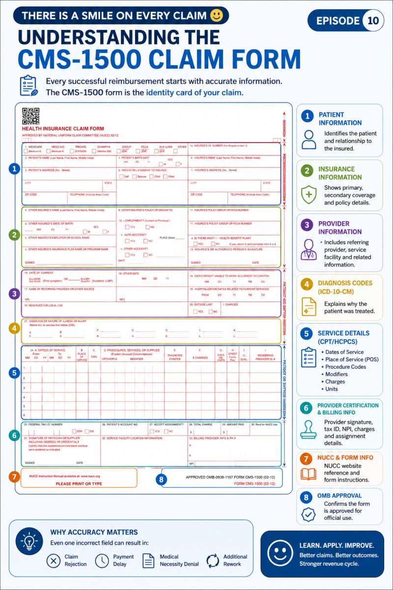

← Back to the Knowledge BankMedical revenue cycle · Starter lessons
From encounter to claim.
Two practical lessons connect the clinical encounter to clean claim preparation—without treating a checklist as a substitute for judgment.

Forms carry structured information. Learn what each part is doing.
🩺
Lesson 1Build the claim story from the encounter.
A claim is only as reliable as the information assembled from registration, clinical documentation, coding and billing edits.
Patient & coverageCorrect identity and relevant plan information
Clinical recordWhat happened and why the service was performed
Code & chargeRepresent the documented service using applicable coding rules
Claim reviewCheck required fields, edits and payer-specific rules
The diagnosis on a claim does not appear supported by the documentation. What is the best first response?
No.Payment likelihood is not a valid basis for selecting a diagnosis.
Correct.Coding should accurately represent supported documentation and follow applicable rules.
That does not address the issue.A repeat submission without resolving the discrepancy may reproduce the problem.
📨
Lesson 2Read the claim response as evidence.
Rejections, denials, remittance advice and status messages are different signals. Correctly identifying the signal shapes the next action.
Front-end signalRejected / not accepted
Often points to a submission or data issue that must be corrected before adjudication can proceed. Confirm the exact response and workflow.
Adjudication signalDenied or adjusted
Review the remittance reason, policy, claim facts, filing limits and appeal/correction options. Never assume every denial has the same remedy.
A denial code is present, but the description alone is unclear. What should you do?
The code is a clue, not the whole story.Context and applicable rules determine the operational path.
Correct.Use multiple evidence sources and document why the selected action is appropriate.
Not yet.Investigate the facts before concluding that the adjudication is wrong.
Reference starting point: CMS Coding & Billing. This is an educational overview, not a substitute for current coding guidance.